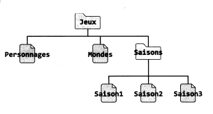
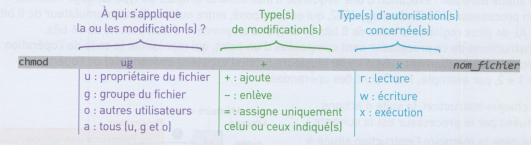

SEQUENCE 2⚓︎
ACTIVITE 1 - Interface en ligne de commande d'un sytème d'exploitation libre⚓︎
Systèmes d'exploitations⚓︎
Repères historiques⚓︎
Prendre connaissance des vidéos suivantes:
A faire
Résumer en une phrase courte le rôle d'un système d'exploitation. Vers quelle période sont nés les systèmes d'exploitation ?
Systèmes libres ou propriétaires⚓︎
A faire
A l'aide de cette page wikipedia, rappelez les 4 différences fondamentales entre un logiciel libre et un logiciel propriétaire. Quelles sont les conséquences du statut propriétaire de Microsoft Windows ?
Le système Linux⚓︎
Histoire du système d'exploitation Linux
A faire
Qui a créé Linux ?
Système de fichiers de Linux⚓︎
Avec Linux, comme dans Microsoft Windows, les données sont stockées dans des fichiers, eux-mêmes contenus dans des dossiers appelés répertoires.
En revanche, il n'existe pas de notion de « disque C:\ ou D:\ ou autre» sous Linux. Un exemple d'organisation des principaux fichiers et
répertoires appelée arborescence est représentée en version simplifiée ci-dessous.

Dans le système de fichiers de Linux, tous les
répertoires nécessaires au fonctionnement du
système d'exploitation (usr, bin, etc, dev, tmp, ...) sont
accessibles depuis le répertoire racine /.
Les répertoires des utilisateurs d'une machine Linux, sont situés dans le répertoire home. Dans l'exemple ci-dessus il s'agit des répertoires Angie et Matei. Attention, le système d'exploitation Linux est sensible à la casse, il faut donc être vigilant et distinguer les majuscules des minuscules.
Pour naviguer dans le système de fichiers, nous devons définir les chemins absolus et relatifs.
Un chemin d'accès absolu part toujours du répertoire racine / suivi des noms de répertoires rencontrés jusqu'à la destination, séparés par des symboles / (slash).
Exemple
Le chemin absolu vers le répertoire Exos de Matéi est /home/Matei/Math/Exos.
A faire
Écrire le chemin absolu vers le répertoire NSI d'Angie.
Lorsque l'on se déplace dans l'arborescence de fichiers, le répertoire dans lequel on se situe s'appelle le répertoire courant et est noté . (point).
Un chemin relatif fait référence au répertoire courant et donne la liste des noms du ou des répertoire(s) rencontrés jusqu'à la destination, séparés par des /.
Exemple
Le chemin relatif vers le répertoire Exos de Matei depuis le répertoire courant home est ./Matei/Math/Exos.
A faire
Écrire le chemin relatif vers le répertoire NSI d'Angie à partir du répertoire courant home.
Pour remonter d'un niveau dans l'arborescence de fichiers, il faut utiliser le répertoire parent .. .
Exemple
Le chemin relatif depuis le répertoire courant d'Angie (/home/Angie) vers le répertoire Math de Matei est ../Matei/Math.
A faire
Écrire le chemin relatif vers le répertoire Jeux d'Angie à partir du répertoire courant NSI
Le chemin vers le répertoire personnel d'un utilisateur est un cas particulier. Il possède un raccourci ~, que l'on prononce tilde. Ainsi, si Angie souhaite rejoindre son répertoire personnel, il lui suffira de taper cd ~.
Structure d'une commande sous Linux⚓︎
Pour interagir avec l'utilisateur, les systèmes d'exploitation (SE) peuvent avoir une interface graphique, où les manipulations se font essentiellement à la souris dans des fenêtres. Il existe une autre possibilité d'interaction: l'interface en ligne de commande. Il s'agit d'un programme qui permet de saisir les commandes que le système d'exploitation doit effectuer, en mode texte.
Pour découvrir comment interagir avec le système d'exploitation en ligne de commandes, nous allons utiliser un système Linux simplifié spécialement adapté pour cette activité.
A faire
Lancer un terminal sous Ubuntu avec la séquence de touche Ctrl＋Alt＋T. A l'intérieur de ce terminal, on saisira la commande:
docker run -it --rm nsilinux:1.6. Un système Linux démarre. La connexion est automatiquement faite sur le compte d'Angie et un programme interpréteur de commande (ici le shell Bash) est en attente. Pour quitter, on utilisera la séquence de touches Ctrl＋D .
Commande
La commande ls (de l'anglais list) permet d'afficher la liste des répertoires et des fichiers dans le répertoire courant.
A faire
Saisir la commande ls. Commenter.
Commande
La commande pwd (de l'anglais print working directory) affiche le répertoire courant. La commande cd (de l'anglais change directory) permet de changer de répertoire courant.
A faire
Tester La commande pwd, puis écrire et tester les commandes appropriées afin de
vérifier vos réponses aux questions de la section Système de fichiers de Linux précédente.
ACTIVITE 2 - Commandes de base avec arguments⚓︎
Angie veut mettre de l'ordre dans son repertoire personnel. Son système de fichiers est le même que celui de l'activité précédente.
Commande
La commande cat suivie d'un nom_de_fichier (de l'anglais catenate) affiche dans la console le contenu du fichier nom_de_fichier passé en argument.
A faire
Se connecter au système linux précédent (docker run --rm -it nsilinux:1.6). A l'aide de la commande cd, aller dans le répertoire NSI puis afficher le contenu du fichier Modules. Écrire les commandes saisies dans la console.
Créer des répertoires⚓︎
Commande
La commande mkdir suivie d'un nom_de_repertoire (de l'anglais make directory) permet de créer un répertoire nommé nom_de_repertoire dans le répertoire courant.
A faire
Créer le répertoire OS dans le répertoire NSI à l'aide de la commande mkdir et vérifier sa création
avec la commande ls. Écrire les commandes nécessaires.
On peut également créer un répertoire dans un autre répertoire en précisant le chemin relatif:
mkdir chemin_relatif/nom_de_repertoire.
A faire
En restant dans le répertoire NSI, créer le répertoire Linux dans le répertoire Angie. Écrire les commandes nécessaires.
Déplacer et copier des fichiers / répertoires⚓︎
Commande
La commande mv source destination (de l'anglais move) permet de déplacer et/ou de renommer des fichiers et des répertoires. Les arguments source et destination sont constitués du nom du fichier ou du répertoire, précédés éventuellement du chemin.
A faire
- A l'aide de la commande
cdaller dans le répertoireAngie. Déplacer le répertoireTypesd'Angie dans le répertoireNSIà l'aide de la commandemv. Écrire les commandes nécessaires. - Quel est le résultat de la commande
mv Encodage NSI/Encodage?
Commande
La commande cp source destination (de l'anglais copy) permet de copier des fichiers ou des répertoires source vers la destination.
A faire
Sans changer de répertoire courant (Angie), créer un répertoire Programmation dans le répertoire NSI, puis copier le fichier Modules dans le répertoire Programmation. Écrire les commandes nécessaires.
Supprimer des fichiers et des répertoires⚓︎
Commande
La commande rm chemin/nom_de_fichier (de l'anglais remove) permet de supprimer définitivement un ou des fichiers.
A faire
- Supprimer le fichier
Modulesdu répertoireNSI. Écrire La commande nécessaire. - Tester la commande
rm Danse. Que remarquez-vous ?Justifier.
Commande
Pour avoir accès à la documentation d'une commande, suffit de saisir man nom_de_la_commande.
A faire
Tester la commande rm -r Danse. Après avoir consulter la documentation de rm conclure sur l'utilité de l'option -r.
ACTIVITE 3 - Etude des droits et permissions⚓︎
Angie s'intéresse aux droits et aux permissions d'accès à des fichiers contenant des informations sur son jeu vidéo préféré, enregistrées sur l'ordinateur familial, qui a pour système d'exploitation Linux.

A faire
Démarrer le système Linux simplifié avec la commande docker run -it --rm nsilinux:1.6
Quand on saisit un nom de fichier ou de répertoire, la touche Tab permet de compléter automatiquement son nom.
A faire
À l'aide de la commande cd, aller dans le répertoire Jeux d'Angie.
Les options -al de la commande ls permettent d'afficher plus d'informations, comme les droits et les permissions d'accès de tous les fichiers et les répertoires (cachés ou non) contenus dans le répertoire courant.
Le premier caractère permet de différencier les répertoires des fichiers. Ainsi, le caractère d (de l'anglais directory) désigne un répertoire et le caractère - désigne un fichier ordinaire.
A faire
Saisir la commande ls -al, puis identifier les répertoires et les fichiers du répertoire d'Angie.
Les caractères ci-dessous correspondent aux droits d'accès et aux permissions.

A faire
Quels sont les dix premiers caractères affichés pour le fichier Mondes et pour le répertoire Saisons.
La présence des lettres r, w et x donne le droit correspondant et - l'interdiction.
| Lettre | De l'anglais | Pour un fichier | Pour un répertoire |
|---|---|---|---|
| r | read | lire | afficher la liste des fichiers et répertoires |
| w | write | modifier le contenu | créer, supprimer et changer le nom des fichiers |
| x | execute | exécuter (si exécutable) | Ouvrir le répertoire |
L'ordinateur familial est configuré pour qu'Angie et son frère Matei soient dans le même groupe d'utilisateurs, appelé enfants.
Leurs parents ont leur propre groupe, différent, appelé parents. Sur un fichier ou un répertoire d'Angie, les parents sont considérés comme « autres utilisateurs ».
Enfin, Angie est également « propriétaire » de ses propres fichiers et répertoires.
A faire
Compléter le tableau ci-dessous avec oui ou non pour les trois utilisateurs: Angie, Matei et Père.
| Lecture | Ecriture | Exécution | |
|---|---|---|---|
| Mondes | |||
| Saisons |
A faire
Quelles actions le père d'Angie peut-il effectuer sur le répertoire Saisons ?
ACTIVITE 4 - Modifications des droits⚓︎
Angie veut donner plus de droits à son petit frère Matéi afin qu'il puisse avoir un accès complet à certains fichiers
contenant des informations sur son jeu vidéo préféré et les modifier lui-même.
(Le système linux simplifié doit être démarré pour cette activité: docker run -it --rm nsilinux:1.6)
Commande
La commande chmod droits nom_fichier_repertoire (de l'anglais change mode) permet de modifier les permissions d'accès à un fichier ou à un répertoire nommé nom_fichier_repertoire. La syntaxe de droits est détaillée ci-dessous.
Exemple
la commande chmod ug+x nom_fichier ajoute le droit d'exécution du fichier nom_fichier au propriétaire et aux utilisateurs faisant partie du groupe du fichier.

A faire
- À l'aide de la commande
ls -l, trouver les droits du fichierPersonnagespuis modifier ses droits afin qu'il soit modifiable par le frère d'Angie, qui est dans le même groupe que le propriétaire. Vérifier enfin que les droits ont bien été changés. - Tester la commande
chmod u=rw,go=r Mondes. Faire une hypothèse sur l'utilité de la virgule.
Au lieu de modifier les fichiers un par un, Angie a découvert, en utilisant la commande man chmod, que
l'option -R (de l'anglais recursive) modifie les autorisations de tout le contenu d'un répertoire.
A faire
Tester, puis écrire la commande qui permet d'ajouter au répertoire Saisons et à tout ce qu'il contient les droits en lecture et en écriture au groupe du fichier. Supprimer les droits en lecture aux utilisateurs qui ne font pas partie du groupe.
COURS - SYSTEME D'EXPLOITATION⚓︎
Quel est le rôle d'un système d'exploitation?⚓︎
Le système d'exploitation permet:
- l'exécution des applications;
- le partage des ressources entre les utilisateurs, les programmes;
-
la gestion:
- des périphériques;
- des fichiers;
- des erreurs;
- des performances.
Les différents types de système d'exploitation⚓︎
On distingue deux grandes familles de système d'exploitation:
- les dérivés d'UNIX (GNU/Linux, BSD, iOS, MacOS, Android, etc.);
- les systèmes Microsoft Windows.
Certains sont libres (c-à-d ne nécessitant pas le paiement d'une licence d'utilisation, code source disponible, entre autres), d'autres non (on les qualifie de systèmes propriétaires).
Conformément au programme, on utilisera un système d'exploitation libre en NSI: GNU/Linux.
L'interaction avec le système d'exploitation peut se faire de deux manières:
- par le biais d'une interface graphique (GUI: Graphical User Interface);
- par le biais d'une interface en ligne de commande (CLI: Command Line Interface).
On privilégiera ici l'utilisation de la ligne de commande.
Découvrir la ligne de commande⚓︎
Un interpréteur de commande : Bash ou shell Bash⚓︎
On a accès à la ligne de commande en ouvrant un terminal avec le raccourci clavier Ctrl＋Alt＋T . Il s'agit d'un programme appelé Bash qui est présent par défaut sur la majorité des sytèmes UNIX.
Les commandes de base⚓︎
Une fois le terminal démarré, chaque utilisateur se trouve par défaut dans son dossier personnel (en anglais home directory ou plus simplement HOME) et le shell Bash est en attente de commande en affichant une série d'informations: nom_utilisateur@nom_machine:~$

Le caractère ~ (prononcez tilde, touche AltGr＋2) correspond au chemin du répertoire personnel de l'utilisateur. Le caractère $ signifie que l'on a affaire à un utilisateur normal c-à-d avec des droits limités.
Toutes les commandes acceptent de nombreuses options. Pour avoir un inventaire complet des options on doit taper: man xxx où xxx est la commande.
Quelques commandes à connaître (liste non exhaustive)
| Commande | Description |
|---|---|
| ls | lister le contenu du dossier courant |
| mkdir | créer un dossier |
| cd | se déplacer dans un dossier |
| cp | copier des fichiers ou dossiers |
| rm | supprimer des fichiers ou dossiers |
| cat | afficher le contenu d'un fichier |
| touch | crée un fichier vide |
| clear | efface l'écran |
Aborescence d'un système Linux⚓︎
Les dossiers du systèmes sont organisés selon une arborescence dont la racine est /.

Un utilisateur normal n'a pas les droits suffisants pour écrire dans les dossiers systèmes ou y effacer des fichiers. Seul le superutilisateur nommé root peut tout faire (et même détruire le système) et n'importe où !
Les changements de dossier se font naturellement avec la commande cd qui peut prendre comme paramètre:
- un chemin absolu, c-à-d complètement qualifié depuis racine
/(par exemple/home/bruno/Documents); - un chemin relatif, c-à-d par rapport au dossier où on se trouve qui est noté avec le raccourci
.(point); le dossier parent est noté avec le raccourci..(point point). Ainsi, si on est dans/home/bruno/Documentset qu'on veut se rendre dans/home/bruno/Téléchargementson tapera:
1 | |
Gestion des droits⚓︎
Qui peut faire quoi et où ? Pour répondre à cette question, les environnements UNIX divisent le monde en trois parties:
- le propriétaire ou utilisateur (user);
- le groupe (group);
- les autres (others).
Par ailleurs, les fichiers peuvent être manipulés en:
- lecture (read);
- écriture (write);
- exécution (execute).
Considérons la sortie de la commande ls -l sur un répertoire donné.

Les colonnes n° 1, 3 et 4 sont utiles à la gestion des droits.
- La colonne 3 indique le nom du propriétaire;
- la colonne 4 indique le nom du groupe;
- la colonne 1 qui contient 10 caractères doit être décomposé en quatre parties. Par exemple
-rwx r-- r--(attention il n'y a pas d'espaces en réalité, ils ont été rajoutés ici pour une meilleure lisibilité) !
Les indications de la 1re colonne peuvent être interprétées de la manière suivante:
- le 1er caractère: un
-correspond à un fichier et undà un répertoire; - un groupe de 3 caractères associés aux droits du propriétaire;
- un groupe de 3 caractères associés aux droits du groupe;
- un groupe de 3 caractères associés aux droits des autres;
Dans l'exemple de la capture ci-dessus, Saison1 est un fichier ordinaire dont le propriétaire est Angie qui dispose des droits en lecture et écriture alors que le groupe enfants et les autres n'ont que le droit en lecture.
Un x signifie droit de traverser pour un répertoire.
Enfin, seuls le propriétaire ou bien root peuvent changer les droits sur un fichier ou répertoire. La commande chmod est prévue à cet effet. Voir des exemples de syntaxe dans le tableau ci-dessous.
| Accorder les droits de: | Syntaxe |
|---|---|
| lecture au groupe | chmod g+r fichier |
| écriture au propriétaire | chmod u+w fichier |
| exécution aux autres | chmod o+x fichier |
| exécution à tous | chmod ugo+r fichier |
Remarque
Pour supprimer un droit, on utilise le signe -; par exemple, pour supprimer le droit d'écriture au groupe sur un fichier, on utilisera la commande chmod g-w fichier
EXERCICES - Séquence 2⚓︎
Cocher la ou les bonnes réponses⚓︎
-
La commande
ls -al: -
permet de lister les fichiers du répertoire courant sans détail.
- permet de lister les fichiers standards et cachés du répertoire courant.
- permet d’afficher des détails sur un fichier comme son propriétaire ou ses droits.
-
n’existe pas en Bash.
-
La commande
mv: -
sert à copier des fichiers ou répertoires.
- sert à déplacer des fichiers ou répertoires.
- peut servir à renommer un fichier ou un répertoire.
-
n’existe pas en Bash.
-
La commande
ls -l toto.shaffiche-r-xr--r-- 1 john staff 128 18 mai 11:56 toto.sh. -
toto.sh appartient à john.
- toto.sh appartient à staff du groupe john.
- Personne n’a le droit d’écriture sur toto.sh.
-
Personne n’a le droit de lire toto.sh.
-
Dans un terminal, on tape
cd(sans arguments) pour se placer dans son répertoire personnel, noté parfoisHOME. Quelle commande doit-on ensuite taper pour déplacer dans le répertoire courant le fichierexo1.pyqui se trouve dansDocuments/python/en sachant queDocumentsest dansHOME? -
cp Documents/python/exo1.py -
mv /Documents/python/exo1.py -
mv ./Documents/python/exo1.py . -
rm Documents/python/exo1.py
Indication pour les exercices
👉 On utilisera la machine Linux simplifiée. On se connectera avec le compte de Matei en saisissant la commande su Matei (son mot de passe est eleve). Puis on se déplace dans son répertoire personnel avec cd ~.
Exercice 1 - Trouver son chemin⚓︎
Observer l’arborescence suivante :

-
Proposer une commande qui permette de se déplacer du répertoire
HOMEde Alice à celui de Bob :- en utilisant un chemin relatif ;
- en utilisant un chemin absolu.
-
Alice est à la racine
/. Proposer deux commandes qui peuvent lui permettre de se déplacer dans son répertoire personnel (HOME). -
Bob est dans son
HOME. Aidez-le à :- lister le contenu de son
HOME; - lister le contenu de son
HOMEy compris les fichiers et répertoires cachés ; - lister le contenu du répertoire
sharesans quitter sonHOME.
- lister le contenu de son
Exercice 2 - Créer une arborescence et se déplacer dedans⚓︎

-
Créer dans le répertoire personnel de
Mateil’arborescence ci-dessus dans laquelle A, B, C, D, E, F et G sont des répertoires. -
La commande du shell
touch nom_fichierpermet de créer un fichier vide. Créer deux fichiers vides appelésunetdeuxdans le répertoire d’accueil. -
Quelle commande permet de copier des fichiers ou répertoires ? Copier le fichier
undans le répertoireAen lui donnant le nomtrois. -
Comment réaliser la copie précédente en utilisant un chemin relatif si vous êtes :
- dans le répertoire A ?
- dans le répertoire B ?
-
Si votre nom d’utilisateur est
Angie, comment réaliser cette copie en utilisant un chemin absolu ? -
Comment renommer le fichier
troisenquatre?
Exercice 3 - Utiliser les pages du manuel d'une commande⚓︎
- Quelle option de la commande
echofaut-il utiliser pour rester sur la même ligne ? - Comment faut-il faire pour afficher un message sur plusieurs lignes avec cette même commande ?
- La commande
cat nom_fichierpermet d'afficher son contenu dans le terminale. Comment peut-on afficher le contenu avec les numéros de lignes? Tester.
Exercice 4 - Avez-vous les droits ?⚓︎
On considère le système étudié dans les activités préparatoires. L'utilisateur Matei est connecté et a obtenu les informations suivantes:

Commandes utilisées: tree repertoire affiche l'arborescence des fichiers depuis repertoire et groups utilisateur permet de connaitre les groupes auxquels appartient l'utilisateur.
- Matei souhaite ajouter un fichier
Saison4dans le dossierSaisonsd'Angie. Peut-il le faire directement ? Justifier la réponse. - Proposer une stratégie pour résoudre le problème.